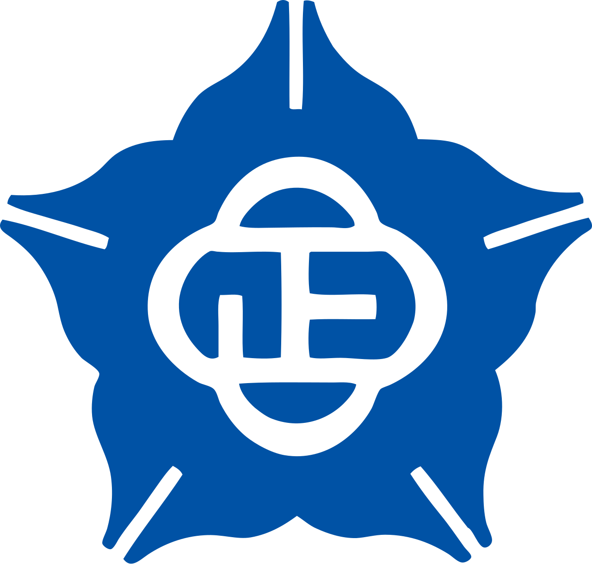
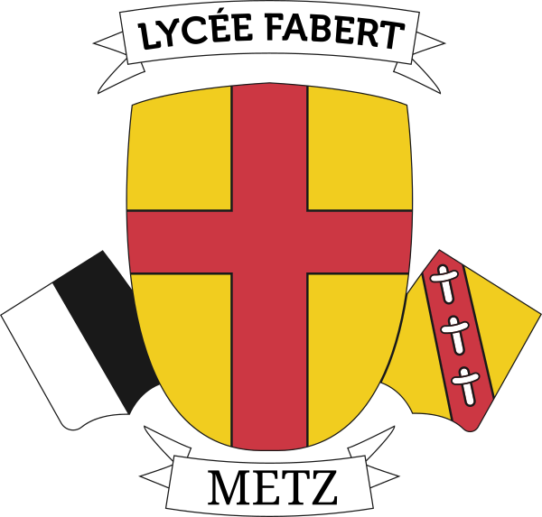
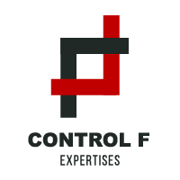

Mehdi ROBARDET —
IA &
développement
logiciel
Étudiant a l'EPITA, je recherche un stage ou une opportunité en intelligence artificielle ou développement logiciel.
Passionné par l'intelligence artificielle et le développement logiciel, je conçois des solutions utiles, performantes et durables.
À travers mes projets concrets, j'explore, j'apprends et je crée des systèmes robustes.
Sélection de projets
Projets concrets.
Microsoft Azure IA Sport
- Mise en place d'un Pipeline Azure Machine Learning de prédiction de blessure avec endpoint d'inférence.
- Conception d'un Workflow Multi-Agent Azure AI Foundry routant les demandes vers des agents nutrition, fitness et FAQ.
- Création d'une application React autour d'un coach sportif IA et d'un tableau de bord de suivi.
- Outils utilisés : React, TypeScript, Azure AI Foundry, Azure Machine Learning, Microsoft Entra ID.
- Voir le projet GitHub
Régression symbolique
- Utilisation de PySR pour découvrir des équations mathématiques avec complexité de Kolmogorov.
- Analyse du front de Pareto précision-complexité afin d'identifier les équations optimales.
- Comparaison avec la régression polynomiale classique et les méthodes à noyau afin d'illustrer le gain en interprétabilité.
- Outils utilisés : Python, PySR, NumPy, Pandas, Scikit-learn.
Modélisation multi-agents
- Implémentation d'agents avec comportements d'influence et de déplacement.
- Ajout de mécanismes de pression sociale et d'effet boomerang.
- Analyse de l'impact des paramètres sur la diffusion des croyances.
- Outils utilisés : NetLogo.
Planification nutritionnelle
- Modélisation CP-SAT du Diet Problem comme knapsack multi-dimensionnel.
- Planification de menus hebdomadaires avec contraintes de variété, budget et saisonnalité.
- Ajout de préférences utilisateur via soft constraints pondérées.
- Benchmark avec USDA FoodData Central et apports OMS/ANSES.
- Comparaison CP-SAT / PLNE avec OR-Tools.
- Outils utilisés : Python, OR-Tools, JSON, API REST, Vite, React.
- Voir le projet GitHub
TinyX / Epitweet
- Développement de la timeline en Java avec Quarkus dans une architecture micro-services.
- Communication asynchrone via Redis et stockage des données avec MongoDB.
- Mise en place de Dockerfiles multi-stage et de tests unitaires JUnit.
- Outils utilisés : Java, Quarkus, Redis, MongoDB, Docker, JUnit.
Epibazaar
- Développement d'une API REST.
- Persistance des données avec Hibernate et ORM dans une base de données.
- Messagerie asynchrone avec Kafka.
- Outils utilisés : Java, Quarkus, Maven, PostgreSQL, Git.
Tiger
- Implémentation d'un lexer avec RE/flex pour l'analyse lexicale.
- Conception d'un parser pour l'analyse syntaxique et construction de l'AST.
- Implémentation de la liaison des symboles et du type-checking via le Template Method Pattern.
- Outils utilisés : C++, Bison, RE/flex, Git, GitLab, Autotools, CMake.
QRCodeur
- Implémentation d'un outil de génération et lecture de QRCode selon la norme ISO/IEC 18004.
- Finalisation de l'apprentissage du Rust.
- Outils utilisés : Rust, Git.
Sudoku Solver
- Résolution d'un Sudoku à partir d'une image.
- Développement d'un réseau de neurones pour reconnaître les chiffres manuscrits.
- Outils utilisés : C, Git.
Compétences
Socle technique.
Python, JavaScript, Java, C++, C, C#, SQL, Rust, OCaml pour passer de l'idée au prototype, puis au service robuste.
TensorFlow, Pandas, NumPy, Django, Node.js, React, Quarkus pour explorer l'IA, le web et les architectures backend.
Docker, Kubernetes, GitLab CI, Kafka, Redis, PostgreSQL pour déployer et maintenir des systèmes plus fiables.
Éducation
Formation IA et data.

EPITA - École d'ingénieur en informatique
- Intelligence artificielle : Fondamentaux pour le Machine Learning, Introduction aux réseaux de neurones, Natural Language Processing, Systèmes Multi-Agents et IA symbolique.
- Data & cloud : Introduction au Data Engineering, Python pour le Big Data avec Pandas, Microsoft Azure et Video Processing.
- Modélisation avancée : Recommender System / Matrix Factorization, Optimisation Convexe, Programmation Par Contraintes, Bayésien & Causalité.
Paris, France
TOEIC 870 - anglais professionnel

National Chung Cheng University
- Contenu : Artificial Intelligence, Robotics, Data Science.
Minxiong, Taiwan

Lycée Fabert
- Obtention du baccalauréat spécialités Mathématiques, Physique-chimie et Informatique, mention Très Bien.
- Langues : Français courant, Anglais niveau avancé, Italien niveau de base.
Metz, France
Expériences professionnelles
Terrain professionnel.

CONTROL F
9 moisFull-Stack Developer
CDD
Févr. 2026 - aujourd'hui · 6 mois Paris, France · Hybride- Réalisation de systèmes CRUD pour la gestion des données applicatives.
- Maintenance de la codebase avec revues de code et gestion des merge requests.
- Interventions sur l'environnement Kubernetes : connexion aux pods, exécution de migrations, redémarrage de services.
- Développement d'API avec Django et création de graphiques de visualisation de données avec Recharts.
- Technologies utilisées : React.js, Django, Kubernetes, AWS, Git, JavaScript.
Front-End Developer
Stage
Sept. 2025 - Janv. 2026 · 5 mois Paris et périphérie · Hybride- Développement de dashboards interactifs avec Shadcn/UI et React.js.
- Migration et maintenance de la pipeline web ainsi que de la codebase front-end.
- Conception et intégration d'une landing page à partir de maquettes Figma.
- Outils utilisés : JavaScript, React.js, Figma, Jira, Git.
QSE Intern
Groupe SOS Seniors · Stage
Juin 2023 - Juillet 2023 · 2 mois Metz, Grand Est, France · Sur site- Analyser les consommations énergétiques des établissements médico-sociaux.
- Créer des supports interactifs de sensibilisation à la sécurité et au développement durable.
Aide éducative bénévole
Assistance aux élèves de première en mathématiques
Janvier 2022 - Juin 2022 · 6 mois Metz, France · Sur site- Aider aux élèves de première à la préparation des examens.
- Renforcer leur méthodologie de résolution de problèmes.
Contact